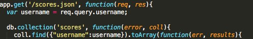
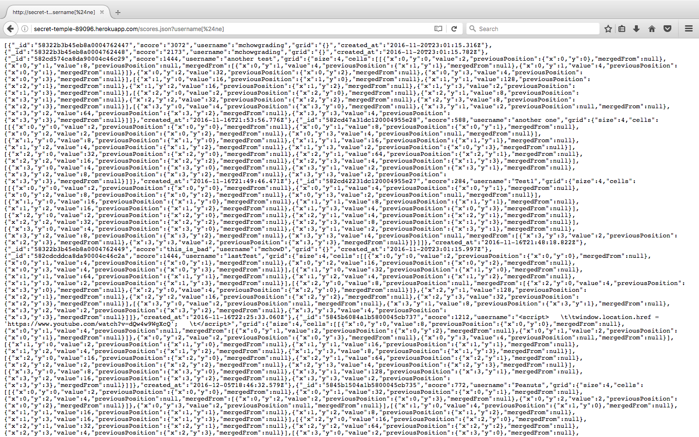
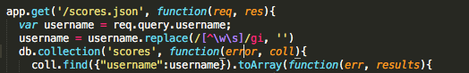

Security Analysis of 2048 Game Center
Introduction
This page documents the security risks and vulnerabilities of the game center of a modified version of 2048 created by Dokyun Kim, analyzed by Jeremy Su. When a game of the modified 2048 game is finished, it will collect a username, score, and grid state, and send it to the game center server, secret-temple-89096.herokuapp.com, via the "/submit.json" path to store it in a database of scores along with the time stamp of storage. The "/" path will display a leaderboard of scores of the modified 2048 games. To retrieve individual data including grid state, the "/scores.json" is available for the user to query a username and return any games played by that user.
Methodology
The first security risk would be malicious input by the user as users are free to enter data and affect anything they send and receive, so checking user and input validity is a hotspot for vulnerabilities. Because the game center is accessible universally rather than having users create personalized accounts with private information, all information is accessible given the user has the right information, so a must-have check would be information hiding.
Abstract of Findings
After thorough analysis of the infrastructure of the game center server, the following issues were found:
- All entries in the database used for the game center can be accessed without explicit knowledge of specific usernames. The security risk of leaking all game scores and grid states may seem insignificant; however, the moment important information is included in the database such as passwords, home addresses, payment methods, attackers can access everything.
- Users can directly alter the behavior of the central leaderboard hub at the "/" path of the server simply by finishing a game and setting their username as malicious programs that will execute when the game center shows. This can lead to a broken webpage, a redirection to malicious sites, or a display of offensive material that may turn away users.
- If the user plays the modified game through a proxy set up by attackers, these attacks can intercept important information such as the security configurations from the server and exploit more holes in the system. They can also ask users for private information through the mask of the game center and have their information stolen only to blame the game center.
Issues Found
Information Leaking
ISSUE: Database Injection/Sensitive Data Exposure
LOCATION: "/scores.json" path
SEVERITY: Medium - Although Database Injections are typically very severe, the type of database used with this game center only allows for searching queries in the exploit and offers no other functionality without direct access to the database. The only threat is therefore information being leaked to any user with the knowledge of the exploit and therefore should not be ignored since if private information is stored in the database, it can be accessed by malicious users.
DESCRIPTION: This vulnerability was found using the query string ?username[$ne] which finds all usernames not equal to nothing; therefore, all usernames are found along with their corresponding information.

As depicted in the code snippet above, the game server does not check the username that the user provides through the query string. The query username[$ne] is therefore able to be filtered through to find every entry in the database with the username key.
RESULTS: Below is a picture depicting the query string and every entry of the database (multiple users are displayed):

RESOLUTION: To fix this issue, it is recommended to sanitize and filter the input of the user's username of any special characters to ensure that the username is composed of alphanumeric characters. A sample solution is provided below:

PROBLEM HERE
ISSUE:
LOCATION:
SEVERITY:
DESCRIPTION:
RESULTS:
RESOLUTION:
PROBLEM HERE
ISSUE:
LOCATION:
SEVERITY:
DESCRIPTION:
RESULTS:
RESOLUTION:
Conclusion